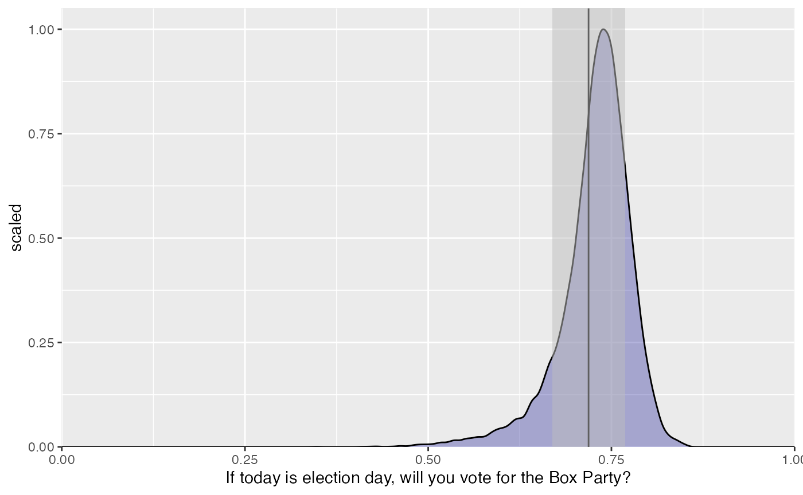
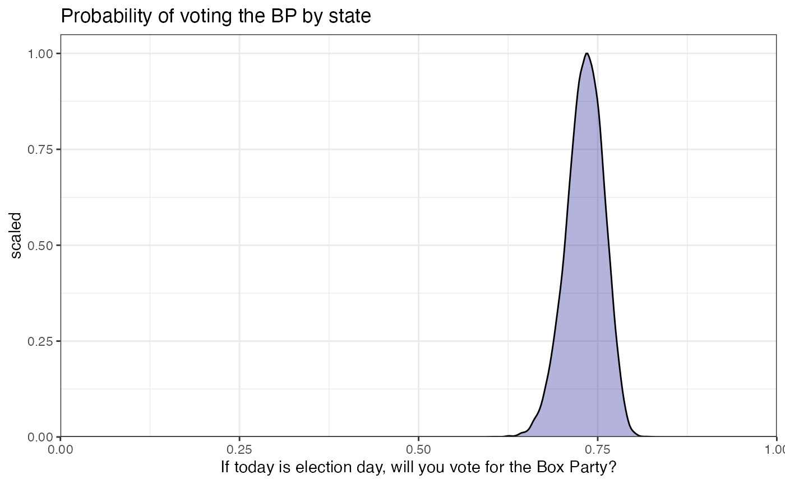
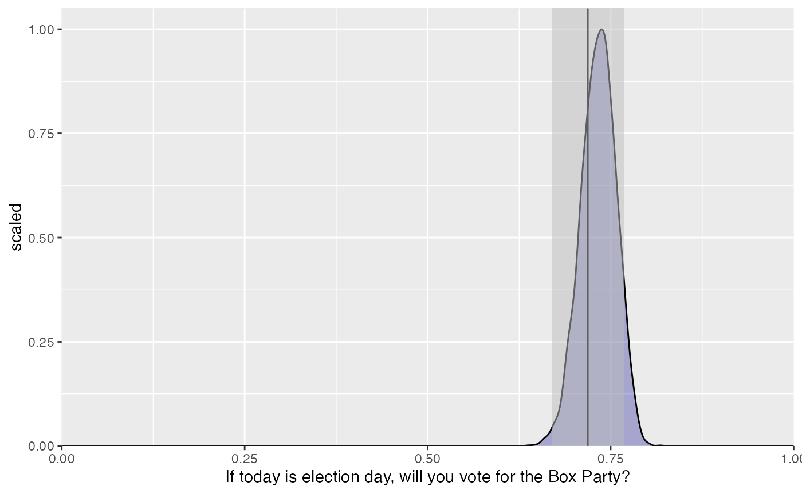

mrpkit_workflow.RmdThis vignette presents the typical workflow of mrpkit, an R package for implementing a multilevel regression with post-stratification.
The aim of mrpkit is to perform multilevel regression with post-stratification (MRP; Gelman & Little, 1997; Park, Gelman, & Bafumi, 2004). By using this package, you follow a specific workflow of MRP from creating the metadata of the survey and post-stratification objects, mapping these objects to each other, fitting the model, getting predictions, aggregating values, and visualizing the results. Hence, it creates a more reproducible and accountable environment for conducting MRP.
Unlike many R packages, mrpkit uses R6 objects (Chang, 2019). Thus, instead of calling a function to perform a task, we call a method embedded in an object using object$method. Typical usage of this package will create four objects: SurveyData, QuestionMap, SurveyMap, and SurveyFit. There are several methods in each of these objects that will be explained later in this vignette.
The workflow to use mrpkit to implement MRP is:
SurveyData.A more detailed example of this workflow follows.
In this vignette, we use simulated survey and post-stratification datasets. These datasets display the preference of voters to the Box Party (BP), a political party in a fake country, Shape World, along with demographic variables. The population is designed using declare_population from DeclareDesign (Blair, Cooper, Coppock, & Humphreys, 2019) to set the features in the population.
We can see every variable in the survey data as follows:
head(shape_survey) #> age gender vote_for highest_educ state y wt #> 1 56-65 male BP some college State D no 79.90290 #> 2 46-55 male Circle Party 4-year college State B yes 89.12213 #> 3 36-45 male Circle Party associates State D no 92.90569 #> 4 18-25 male Box Party high school State B yes 80.78384 #> 5 56-65 female BP high school State A yes 89.85756 #> 6 56-65 female Circle Party 4-year college State B yes 117.04200
Additionally, the approximate population can be seen as follows:
head(approx_voters_popn) #> age_group gender vote_pref wt education state #> 1 66+ m BP 6.007461 4-years college A #> 2 56-65 f CP 8.465851 high school A #> 3 56-65 m CP 4.098878 4-years college C #> 4 66+ m BP 3.883250 4-years college C #> 5 66+ f CP 16.179562 some college B #> 6 18-35 m BP 3.851837 high school D
SurveyData objectSurveyData objects are used to represent both the survey and the post-stratification datasets, along with their metadata. The survey metadata consists of the survey’s variables, the questions that were asked, and the levels of the responses. It is also optionally to include the survey weight and its design formula to this object.
The most important methods for SurveyData objects are SurveyData$new and SurveyData$print. The SurveyData$new method is used to transform a regular data frame to a SurveyData object, whereas SurveyData$print is used to print the created SurveyData object.
In this example, we will show the steps to create the SurveyData object using the SurveyData$new method. SurveyData$new takes the argument of the metadata as mentioned previously, which are:
data : Data frame, i.e., survey or post-stratification data that would be transformed to a SurveyData object. Note that this method will automatically use each of the factor, character, and binary variables to create questions and responses if you do not specify the list of questions and responses. After SurveyData is initialized, we can print it using the print method as shown below.questions: The question asked in the questionnaire for each of those columns.responses: Allowed response for each question.weights: This is an optional argument of the survey or post-stratification/population weight. If the weight is specified as a column in the datasets, then this argument should be specify as string data type. in this case, it is “wt” for shape_survey and approx_voters_popn. Another example is if the population is summarized as a post-stratification matrix already, then the weight would be the size of each cell, denote by \(N_j\). Further, if the entire individual level population is given, the the this argument should be omitted and it would be automatically specify as 1.design: This is an optional argument of the design formula of the survey, specified using the survey (Lumley, 2020) package notation.SurveyData object for the survey data setbox_pref <- SurveyData$new( data = shape_survey, questions = list(age = "Please identify your age group", gender = "Please select your gender", vote_for = "Which party did you vote for in the 2018 election?", highest_educ = "Please identify your completed highest education", state = "Which State do you live in?", y = "If today is election day, will you vote for the Box Party?"), responses = list(age = levels(shape_survey$age), gender = levels(shape_survey$gender), vote_for = levels(shape_survey$vote_for), highest_educ = levels(shape_survey$highest_educ), state = levels(shape_survey$state), y = c("no","yes")), weights = "wt", design = list(ids =~1)) # print it box_pref$print() #> Survey with 500 observations, 6 questions #> Independent Sampling design (with replacement) #> #> Column label: age #> Question: Please identify your age group #> Allowed answers: 18-25, 26-35, 36-45, 46-55, 56-65, 66-75, 76-90 #> #> Column label: gender #> Question: Please select your gender #> Allowed answers: male, female, nonbinary #> #> Column label: highest_educ #> Question: Please identify your completed highest education #> Allowed answers: no high school, high school, some college, associates, 4-year college, post-graduate #> #> Column label: state #> Question: Which State do you live in? #> Allowed answers: State A, State B, State C, State D, State E #> #> Column label: vote_for #> Question: Which party did you vote for in the 2018 election? #> Allowed answers: Box Party, BP, Circle Party, CP #> #> Column label: y #> Question: If today is election day, will you vote for the Box Party? #> Allowed answers: no, yes
SurveyData object for the post-stratification datasetThe following code is used to create SurveyData object for post-stratification data when the weight is already specified in the datasets. Usually, the post-stratification data is from a large survey, for example, the American Community Survey (ACS) or Demographic and Health Survey (DHS).
popn_obj <- SurveyData$new( data = approx_voters_popn, questions = c(age_group = "Which age group are you?", gender = "Which gender are you identified?", vote_pref = "Which party do you prefer to vote?", education = "What is the highest grade or level of school you have completed", state = "Please identify the state where you live in"), responses = list(age_group = levels(approx_voters_popn$age_group), gender = levels(approx_voters_popn$gender), vote_pref = levels(approx_voters_popn$vote_pref), education = levels(approx_voters_popn$education), state = levels(approx_voters_popn$state)), weights = "wt", design = list(ids =~1) ) # print it popn_obj$print() #> Survey with 5000 observations, 5 questions #> Independent Sampling design (with replacement) #> #> Column label: age_group #> Question: Which age group are you? #> Allowed answers: 18-35, 36-55, 56-65, 66+ #> #> Column label: education #> Question: What is the highest grade or level of school you have completed #> Allowed answers: no high school, high school, some college, 4-years college, post-grad #> #> Column label: gender #> Question: Which gender are you identified? #> Allowed answers: m, f, nb #> #> Column label: state #> Question: Please identify the state where you live in #> Allowed answers: A, B, C, D, E #> #> Column label: vote_pref #> Question: Which party do you prefer to vote? #> Allowed answers: BP, CP
The following code demonstrates (optional) weights specification if weights are not included in the dataset via summarizing the post-stratification matrix. Also, here the survey design is not specified.
# Create the weight as the sum of each post-stratification cell popn_poststrat <- approx_voters_popn %>% group_by(age_group, gender, vote_pref, education, state) %>% summarise(N_j = sum(wt)) #> `summarise()` has grouped output by 'age_group', 'gender', 'vote_pref', 'education'. You can override using the `.groups` argument. # create the SurveyData object and set the weight as N_j popn_obj_poststrat <- SurveyData$new( data = popn_poststrat, questions = c(age_group = "Which age group are you?", gender = "Which gender are you identified?", vote_pref = "Which party do you prefer to vote?", education = "What is the highest grade or level of school you have completed", state = "Please identify the state where you live in"), responses = list(age_group = levels(approx_voters_popn$age_group), gender = levels(approx_voters_popn$gender), vote_pref = levels(approx_voters_popn$vote_pref), education = levels(approx_voters_popn$education), state = levels(approx_voters_popn$state)), weights = "N_j" ) popn_obj_poststrat$print() #> Survey with 428 observations, 5 questions #> Independent Sampling design (with replacement) #> #> Column label: age_group #> Question: Which age group are you? #> Allowed answers: 18-35, 36-55, 56-65, 66+ #> #> Column label: education #> Question: What is the highest grade or level of school you have completed #> Allowed answers: no high school, high school, some college, 4-years college, post-grad #> #> Column label: gender #> Question: Which gender are you identified? #> Allowed answers: m, f, nb #> #> Column label: state #> Question: Please identify the state where you live in #> Allowed answers: A, B, C, D, E #> #> Column label: vote_pref #> Question: Which party do you prefer to vote? #> Allowed answers: BP, CP
If the population data uses the entire individual level, then the weight should not be specified, as shown in this example.
popn_obj_entire_ind <- SurveyData$new( data = popn_poststrat, questions = c(age_group = "Which age group are you?", gender = "Which gender are you identified?", vote_pref = "Which party do you prefer to vote?", education = "What is the highest grade or level of school you have completed", state = "Please identify the state where you live in"), responses = list(age_group = levels(approx_voters_popn$age_group), gender = levels(approx_voters_popn$gender), vote_pref = levels(approx_voters_popn$vote_pref), education = levels(approx_voters_popn$education), state = levels(approx_voters_popn$state)) ) #> Warning: 'Weights have not been provided, assume all data weighted with weight #> 1. popn_obj_entire_ind$print() #> Survey with 428 observations, 5 questions #> Independent Sampling design (with replacement) #> #> Column label: age_group #> Question: Which age group are you? #> Allowed answers: 18-35, 36-55, 56-65, 66+ #> #> Column label: education #> Question: What is the highest grade or level of school you have completed #> Allowed answers: no high school, high school, some college, 4-years college, post-grad #> #> Column label: gender #> Question: Which gender are you identified? #> Allowed answers: m, f, nb #> #> Column label: state #> Question: Please identify the state where you live in #> Allowed answers: A, B, C, D, E #> #> Column label: vote_pref #> Question: Which party do you prefer to vote? #> Allowed answers: BP, CP
In addition, sometimes, we want to access the properties of the SurveyData object, for example, the weights, the design, the questions and the number of questions, or the responses. The SurveyData object has methods that allow us to do so. They are SurveyData$weights(), SurveyData$design(), SurveyData$questions(), SurveyData$n_questions(), SurveyData$responses().
QuestionMap objectsFrom the metadata above, we can see that the survey (box_pref) and population (popn_obj) objects have different column labels and response levels. For example, the column label for age in box_pref is age, whereas, in popn_obj, the column label is age_group. This variable also has different levels, box_pref has seven levels of age, whereas popn_obj has only four levels of age.
These column labels and levels should be aligned to be able to perform MRP. With QuestionMap$new method, we are able to align the names of the columns and mapping their values.
This method takes three arguments:
name : the name of the underlying construct. This will be used in the modeling stage.col_names: a character vector of the column label in the survey and post-stratification objects. Note that, column name of the survey should always be the first element, followed by the column name of the post-stratification object. This order is not interchangeable.values_map: list of the mapped values between the survey and post-stratification object. If there is a meaningful ordering over the values, they should be sorted over that order, either descending or ascending.Here is an example of how this method works:
# create QuestionMap$object for the question related to age q_age <- QuestionMap$new( name = "age", col_names = c("age","age_group"), values_map = list( "18-25" = "18-35", "26-35" = "18-35", "36-45" = "36-55", "46-55" = "36-55", "56-65" = "56-65", "66-75" = "66+", "76-90" = "66+")) # create QuestionMap$object for the question related to party preference q_party_pref <- QuestionMap$new( name = "party_pref", col_names = c("vote_for","vote_pref"), values_map = list("Box Party" = "BP", "BP" = "BP", "Circle Party" = "CP", "CP" = "CP")) # create QuestionMap$object for the question related to gender q_gender <- QuestionMap$new( name = "gender", col_names = c("gender", "gender"), values_map = data.frame("male" = "m", "female" = "f", "nonbinary" = "nb")) # create QuestionMap$object for the question related to education q_educ <- QuestionMap$new( name = "highest_education", col_names = c("highest_educ", "education"), values_map = list("no high school" = "no high school", "high school" = "high school", "some college" = "some college", "associates" = "some college", "4-year college" = "4-years college", "post-graduate" = "post-grad")) # create QuestionMap$object for the question related to state q_state <- QuestionMap$new( name = "state", col_names = c("state", "state"), values_map = list("State A" = "A", "State B" = "B", "State C" = "C", "State D" = "D", "State E" = "E"))
The SurveyMap object holds the mapping between a set of items in the survey and post-stratification datasets. It takes the SurveyData objects, which in this case are bp_pref and popn_obj, together with labels and values that have been matched and provided in the QuestionMap objects. The mapped object would specify the correspondences in the variables that will be used when fitting the model.
The SurveyMap object has various methods as listed as follows:
SurveyMap$new
This method is used to initialize a new SurveyMap object. This takes SurveyData and QuestionMap objects as its argument. You can include all of the questions here, or add it incrementally using add method that is explained in point 2.
# create a new SurveyMap object ex_map <- SurveyMap$new(sample = box_pref, population = popn_obj, q_age) #> Warning: Variable(s) 'gender', 'vote_pref', 'education', 'state' are available #> in the population but won't be used in the model # example of mapping all of the questions at once # ex_map <- SurveyMap$new(sample = box_pref, population = popn_obj, # q_age, q_educ, q_gender, q_party_pref, q_state)
SurveyMap$add
To get rid of the warning above, we could use this method to add other QuestionMap objects to the map.
# add questions incrementally ex_map$add(q_educ) #> Warning: Variable(s) 'gender', 'vote_pref', 'state' are available in the #> population but won't be used in the model ex_map$add(q_gender, q_party_pref, q_state) print(ex_map) #> ============== #> age = age_group #> -------------- #> 18-25 = 18-35 #> 26-35 = 18-35 #> 36-45 = 36-55 #> 46-55 = 36-55 #> 56-65 = 56-65 #> 66-75 = 66+ #> 76-90 = 66+ #> ============== #> highest_educ = education #> -------------- #> no high school = no high school #> high school = high school #> some college = some college #> associates = some college #> 4-year college = 4-years college #> post-graduate = post-grad #> ============== #> gender = gender #> -------------- #> male = m #> female = f #> nonbinary = nb #> ============== #> vote_for = vote_pref #> -------------- #> Box Party = BP #> BP = BP #> Circle Party = CP #> CP = CP #> ============== #> state = state #> -------------- #> State A = A #> State B = B #> State C = C #> State D = D #> State E = E
SurveyMap$delete
Now, we already have all of the questions in the post-stratification object mapped. Sometimes, we do not want to include all of the variables in the post-stratification matrix. For example, in this case, we want to exclude party_pref from the matrix using delete method.
# we can also use the label instead of the object name ex_map$delete("party_pref") #> Warning: Variable(s) 'vote_pref' are available in the population but won't be #> used in the model print(ex_map) #> ============== #> age = age_group #> -------------- #> 18-25 = 18-35 #> 26-35 = 18-35 #> 36-45 = 36-55 #> 46-55 = 36-55 #> 56-65 = 56-65 #> 66-75 = 66+ #> 76-90 = 66+ #> ============== #> highest_educ = education #> -------------- #> no high school = no high school #> high school = high school #> some college = some college #> associates = some college #> 4-year college = 4-years college #> post-graduate = post-grad #> ============== #> gender = gender #> -------------- #> male = m #> female = f #> nonbinary = nb #> ============== #> state = state #> -------------- #> State A = A #> State B = B #> State C = C #> State D = D #> State E = E
SurveyMap$replace
Suppose that you changed your mind and want to use another level of matching for a certain question. For example, in question regarding education, q4, you want to change the “associates” level to be equal to “4-years college”. To do this, you can firstly create a new QuestionMap object corresponding to that new level mapping. Secondly, you can use the replace method to change the question object. This method takes two arguments, namely old question as the first argument and the new question as the second argument.
# create a new QuestionMap corresponding to the new level matching q_educ_new <- QuestionMap$new( name = "highest_educ", col_names = c("highest_educ", "education"), values_map = list("no high school" = "no high school", "high school" = "high school", "some college" = "some college", "associates" = "4-years college", "4-year college" = "4-years college", "post-graduate" = "post-grad")) # replace the old question with new question ex_map$replace(q_educ, q_educ_new) #> Warning: Variable(s) 'vote_pref', 'education' are available in the population #> but won't be used in the model #> Warning: Variable(s) 'vote_pref' are available in the population but won't be #> used in the model print(ex_map) #> ============== #> age = age_group #> -------------- #> 18-25 = 18-35 #> 26-35 = 18-35 #> 36-45 = 36-55 #> 46-55 = 36-55 #> 56-65 = 56-65 #> 66-75 = 66+ #> 76-90 = 66+ #> ============== #> gender = gender #> -------------- #> male = m #> female = f #> nonbinary = nb #> ============== #> state = state #> -------------- #> State A = A #> State B = B #> State C = C #> State D = D #> State E = E #> ============== #> highest_educ = education #> -------------- #> no high school = no high school #> high school = high school #> some college = some college #> associates = 4-years college #> 4-year college = 4-years college #> post-graduate = post-grad
SurveyMap$mapping
Once you are happy with your map object, you can prepare the mapped data for model fitting with the mapping method.
ex_map$mapping()
SurveyMap$tabulate
The next step is to prepare the post-stratification table using the tabulate method. If you want to only use a certain variable in the post-stratification matrix, then you should put that variable as the argument. For instance, here, we only use age in the post-stratification matrix.
ex_map$tabulate("age")
If you want to include all of the variables in the post-stratification matrix, then the method should not take any arguments.
ex_map$tabulate()
SurveyMap$fit
Finally, we are able to fit the model using fit method. Currently, this package supports rstanarm::stan_glmer and rstanarm::stan_glm (Goodrich, Gabry, Ali, & Brilleman, 2020), lme4::glmer (Bates, Maechler, Bolker, & Walker, 2015) , brms::brm (Bürkner, 2018) as the built-in functions. However, you could also specify your own function. In this case, you should give a data argument that accepts a data frame. In this example, we fit three models using fun=rstanarm::stan_glmer, fun=lme4::glmer, and fun=brms:brm with age, gender, and education as the predictors.
# example of using rstanarm::stan_glmer fit1 <- ex_map$fit( fun = rstanarm::stan_glmer, formula = y ~ (1|age) + (1|gender) + (1|highest_educ), family = "binomial", refresh = 100, cores = 2) # example of using lme4::glmer fit2 <- ex_map$fit( fun = lme4::glmer, formula = y ~ (1|age) + (1|gender) + (1|highest_educ), family = "binomial")
# example using brms::brm fit3 <- ex_map$fit( fun = brms::brm, formula = y ~ (1|age) + (1|gender), family = "bernoulli", refresh = 100, cores = 2)
The resulting object is not simply the fitted model object created by the modeling function, but rather a SurveyFit object that contains the fitted model and provides useful methods for working with it.
SurveyFit objectIn this stage, we already have the fitted model object, i.e., fit1 and fit2. These objects have been automatically stored as SurveyFit objects. Using this object we can generate the predicted probabilities for all post-stratification cells, aggregate the small area estimation, for example, state or province estimates, and visualize the aggregated estimates.
After creating the SurveyFit object, we are able to generate the predicted probability of the outcome of each post-stratification cell using the SurveyFit$population_predict method. It returns a matrix with rows that correspond to the columns of post-stratification data and columns that correspond to the posterior samples.
Furthermore, if the model fitting is done with one of the built-in functions (rstanarm::stan_glmer, lme4::glmer, brms::brm), then this method does not take any arguments. However, if you used a customized function in the model fitting, then this method takes multiple arguments, including a custom prediction function (see ?SurveyFit for details). In this example, we will show how to use this method for the fit1 object created using rstanarm::stan_glmer.
# predict the probability of voting for the Box Party using the fit1 model poststrat_est_fit1 <- fit1$population_predict()
The next step is to generate the population estimate or group estimate using the SurveyFit$aggregate method. This method takes two arguments, namely the post-stratification estimate data and the variable whose level to which the estimated value would be aggregated to. In this example, we want to aggregate the estimated value by the level of age and state. If the variable is not specified, then this method would generate a population estimate.
# aggregate the predicted value by age age_estimation <- fit1$aggregate(poststrat_est_fit1, by = "age") # aggregate the predicted value by state state_estimation <- fit1$aggregate(poststrat_est_fit1, by = "state") # generate the population estimate popn_estimation <- fit1$aggregate(poststrat_est_fit1)
This method then will return a data frame with the variable levels and probability of the outcome, y. In this example, age_estimation represents the age group and the probability of voting for the Box Party for each age group. You can also get the mean of the probability of voting the BP by age group and its standard deviation with the help of summarize function from dplyr (Wickham, François, Henry & Müller, 2020) using the code as follows.
head(age_estimation) #> age value #> 1 18-25 + 26-35 0.7197018 #> 2 36-45 + 46-55 0.7132751 #> 3 56-65 0.7271213 #> 4 66-75 + 76-90 0.6928325 #> 5 18-25 + 26-35 0.7151023 #> 6 36-45 + 46-55 0.7088473 # get the mean and sd for each age group age_estimation %>% group_by(age) %>% summarize(mean = mean(value), sd = sd(value)) #> # A tibble: 4 x 3 #> age mean sd #> <fct> <dbl> <dbl> #> 1 18-25 + 26-35 0.692 0.0642 #> 2 36-45 + 46-55 0.755 0.0316 #> 3 56-65 0.746 0.0295 #> 4 66-75 + 76-90 0.718 0.0350
Once we have the aggregated estimates, we are able to visualize them using the plot method. This method takes the aggregated data frame and weights option (the default is TRUE) as its arguments. It generates a violin plot of the aggregated estimate by the level of a certain variable. When the weight is equal to TRUE, the estimation is weighted. Also, the plot would display the 95% confidence interval of the weighted estimation. In this example, we display the estimated plot for age and state and a density plot for the population estimates.
plot_age <- fit1$plot(age_estimation) plot_age

The plot above shows the distribution of people who vote for the Box Party for each age group. The plot implies that people who are aged 36-55 are most likely to vote for the BP.
The next plot displays the probability of voting for the BP by the state without using the weight. We learn that the probability of the BP winning the election is high since the majority of people in all states (around 75%) vote for that party. Note that this violin plot is generated using ggplot2 (Wickham, 2016). Hence, it could be modified the same way ggplot2’s plot is modified. For example, here, we can add the title and change the theme of the plot.
library(ggplot2) plot_state <- fit1$plot(state_estimation, weights = FALSE) + ggtitle("Probability of voting the BP by state") + theme_bw() plot_state

Lastly, we show the plot of the population estimate. About 70% of people in the Shape World will be likely to vote for the Box Party.
fit1$plot(popn_estimation, weights = TRUE)

Bates, D., Maechler, M., Bolker, B., & Walker, S. (2015). Fitting Linear Mixed-Effects Models Using lme4. Journal of Statistical Software, 67(1), 1-48. :10.18637/jss.v067.i01.
Blair, G., Cooper, J., Coppock, A., & Humphreys, M. (2019). Declaring and Diagnosing Research Designs. American Political Science Review 113(3): 838-859. URL http://declaredesign.org/declare.pdf
Bürkner, P.C. (2018). Advanced Bayesian Multilevel Modeling with the R Package brms. The R Journal, 10(1), 395-411. :10.32614/RJ-2018-017
Chang, W. (2019). R6: Encapsulated Classes with Reference Semantics. R package version 2.4.1. https://CRAN.R-project.org/package=R6
Gelman, A., & Little, T. C. (1997). Poststratification into many categories using hierarchical logistic regression. Survey Methodology, 23(2), 127–135.
Goodrich, B., Gabry, J., Ali, I., & Brilleman S. (2020). rstanarm: Bayesian applied regression modeling via Stan. R package version 2.21.1 https://mc-stan.org/rstanarm.
Lumley, T. (2020) “survey: analysis of complex survey samples”. R package version 4.0.
Park, D. K., Gelman, A., & Bafumi, J. (2004). Bayesian multilevel esti- mation with poststratification: State-level estimates from national polls. Political Analysis, 12(4), 375–385.
R Core Team. (2020). R: A language and environment for statistical computing. R Foundation for Statistical Computing, Vienna, Austria. URL https://www.R-project.org/.
Wickham, H., François, R., Henry, L., & Müller, K. (2020). dplyr: A Grammar of Data Manipulation. R package version 1.0.2. https://CRAN.R-project.org/package=dplyr
Wickham, H. (2016). ggplot2: Elegant Graphics for Data Analysis. Springer-Verlag New York